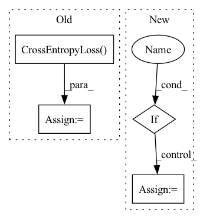

Pattern ID :10534
Before Change
batch = tuple(t.to(self.device) for t in batch)
input_ids, input_mask, segment_ids, label_ids = batch
train_target = Class2Simi(label_ids, mode="cls").detach()
loss_fct = nn.CrossEntropyLoss()
loss = self.model(input_ids, segment_ids, input_mask, train_target, loss_fct = loss_fct, mode = "train")
self.optimizer.zero_grad()
loss.backward()After Change
self.model = best_model
if args.save_model :
pretrained_model_dir = os.path.join(args.method_output_dir, "pretrain")
if not os.path.exists(pretrained_model_dir):
os.makedirs(pretrained_model_dir)
save_model(self.model, pretrained_model_dir)In pattern: SUPERPATTERN
Frequency: 3
Non-data size: 4
Instances Fragment ID: 36682697
Project Name: thuiar/textoir
Commit Name: 4f0068bc25a3a26da045579505b16f4458389c60
Time: 2021-08-02
Author: zhang-hl20@mails.tsinghua.edu.cn
File Name: open_intent_discovery/methods/semi_supervised/KCL_BERT/pretrain.py
M Class Name: PretrainKCLManager
N Class Name: PretrainKCLManager
M Method Name: train(3)
N Method Name: train(3)
M Parent Class:
N Parent Class:
M File Name: open_intent_discovery/methods/semi_supervised/KCL_BERT/pretrain.py
N File Name: open_intent_discovery/methods/semi_supervised/KCL_BERT/pretrain.py
M Start Line: 51
M End Line: 81
N Start Line: 56
N End Line: 113
Before Change
self.global_avgpooling = torch.nn.AdaptiveAvgPool1d(1)
// 损失函数, loss
self.loss_type = self.graph_config.loss_type if self.graph_config.loss_type else "BCE"
self.loss_ce = torch.nn.CrossEntropyLoss(ignore_index=0)
self.loss_mlsm = torch.nn.MultiLabelSoftMarginLoss() // like BCEWithLogitsLoss
self.loss_bcelog = torch.nn.BCEWithLogitsLoss()
self.loss_bce = torch.nn.BCELoss()
self.loss_mse = torch.nn.MSELoss()After Change
self.pretrained_config = pretrained_config.from_pretrained(graph_config.pretrained_model_name_or_path, output_hidden_states=graph_config.output_hidden_states)
self.pretrained_config.update({"gradient_checkpointing": True})
super(TCGraph, self).__init__(self.pretrained_config)
if self.graph_config.is_train :
self.pretrain_model = pretrained_model.from_pretrained(graph_config.pretrained_model_name_or_path, config=self.pretrained_config)
self.pretrain_model.resize_token_embeddings(len(tokenizer))
else:
self.pretrain_model = pretrained_model(self.pretrained_config) // 推理时候只需要加载超参数, 不需要预训练模型的权重
self.pretrain_model.resize_token_embeddings(len(tokenizer))
// // tokenizer.model_max_length = self.model.config.max_position_embeddings
// 如果用隐藏层输出 Fragment ID: 36682696
Project Name: yongzhuo/pytorch-nlu
Commit Name: d3946801ec80f6f92ff2bd08b9cb342f904934c2
Time: 2023-02-02
Author: 2714618994@qq.com
File Name: pytorch_nlu/pytorch_textclassification/tcGraph.py
M Class Name: TCGraph
N Class Name: TCGraph
M Method Name: __init__(3)
N Method Name: __init__(2)
M Parent Class: BertPreTrainedModel
N Parent Class: BertPreTrainedModel
M File Name: pytorch_nlu/pytorch_textclassification/tcGraph.py
N File Name: pytorch_nlu/pytorch_textclassification/tcGraph.py
M Start Line: 27
M End Line: 56
N Start Line: 16
N End Line: 42
Before Change
base_model = GPTModel(**config)
model = GPTLMHeadModel(base_model)
loss_fct = paddle.nn.loss.CrossEntropyLoss()
logits = model(input_ids)
loss = loss_fct(logits, input_ids)
self.parent.assertEqual(loss.shape, [1])After Change
base_model = GPTModel(**config)
model = GPTLMHeadModel(base_model)
if self.parent.use_labels :
loss, logits = model(input_ids, labels=input_ids, return_dict=self.parent.return_dict)
self.parent.assertEqual(loss.shape, [1])
self.parent.assertEqual(logits.shape, [self.batch_size, self.seq_length, self.vocab_size])
loss.backward() Fragment ID: 36682695
Project Name: paddlepaddle/paddlenlp
Commit Name: db3bde142ca2da76bfc701cd4ecc17140c248060
Time: 2022-12-06
Author: 40912707+Yam0214@users.noreply.github.com
File Name: tests/transformers/gpt/test_modeling.py
M Class Name: GPTModelTester
N Class Name: GPTModelTester
M Method Name: create_and_check_forward_and_backwards(4)
N Method Name: create_and_check_forward_and_backwards(4)
M Parent Class:
N Parent Class:
M File Name: tests/transformers/gpt/test_modeling.py
N File Name: tests/transformers/gpt/test_modeling.py
M Start Line: 292
M End Line: 298
N Start Line: 318
N End Line: 324